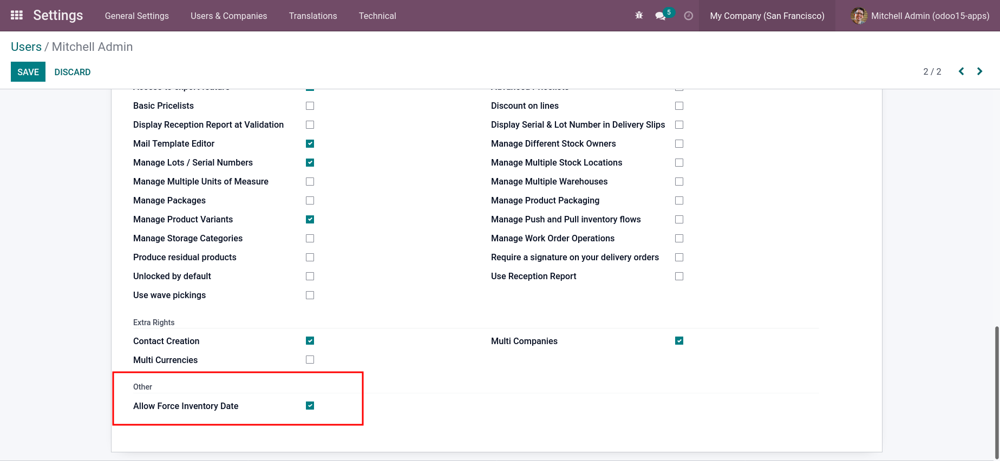
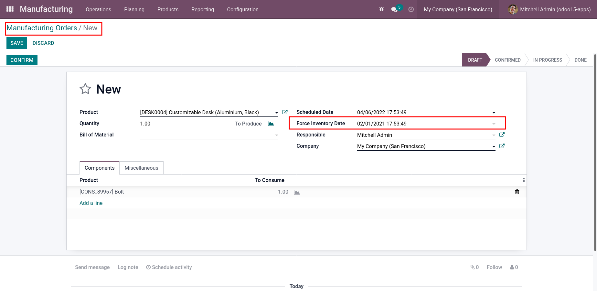
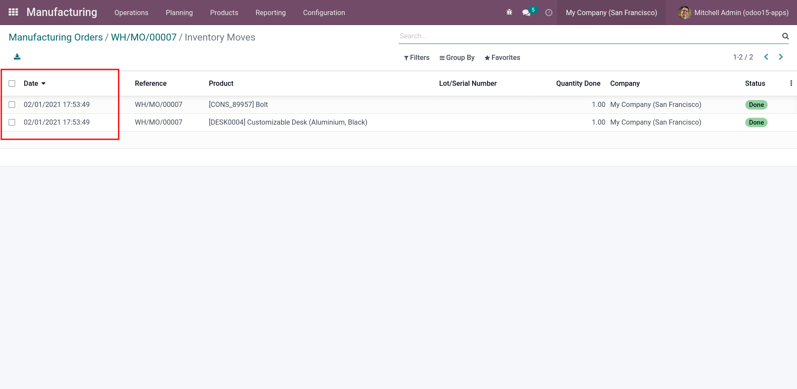
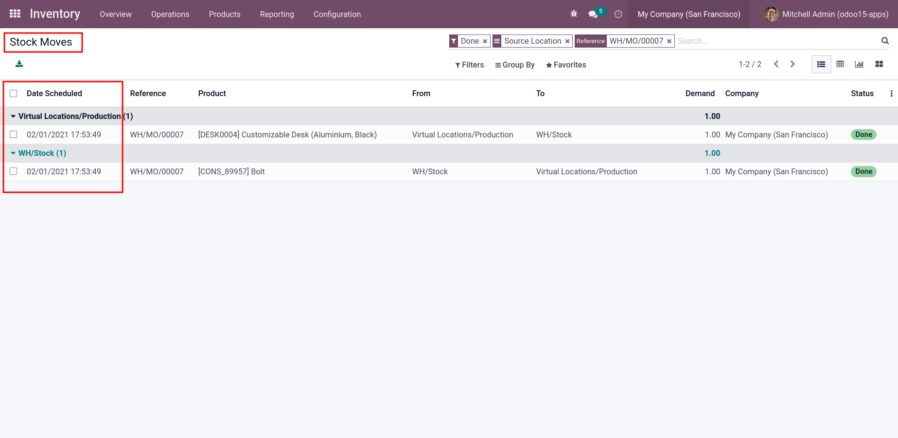

The Main Idea:
This module allow you to make Manufacture Order in past date .
Key Features:
1- Allow to user the access to force inventory date.

2- create Manufacture Order and fill force inventory date by desired date in the past

4.1- stock moves created by the forced date.

4.2- stock moves Lines (Product Moves) created by the forced date.
